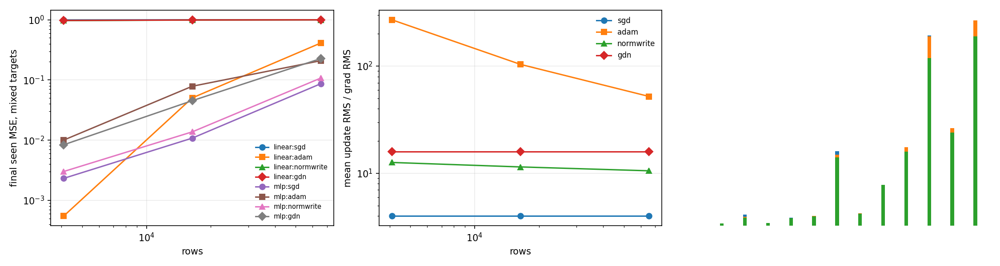
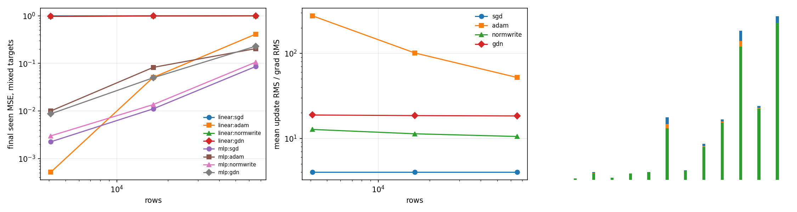

Synthetic sparse row memory under noisy MSE. Targets are random row vectors; readouts are linear or frozen RMSNorm+MLP. Methods: row SGD, row Adam, normalized vector write, GDN state write.
| target | readout | rows | raw-GDN best | raw MSE | norm-GDN best | norm MSE |
|---|---|---|---|---|---|---|
| gaussian | linear | 4096 | adam | 0.0007092 | adam | 0.0007116 |
| gaussian | linear | 16384 | adam | 0.08497 | adam | 0.08487 |
| gaussian | linear | 65536 | adam | 0.4636 | adam | 0.4637 |
| gaussian | mlp | 4096 | sgd | 0.00243 | sgd | 0.002399 |
| gaussian | mlp | 16384 | sgd | 0.009958 | sgd | 0.0117 |
| gaussian | mlp | 65536 | sgd | 0.08312 | sgd | 0.08888 |
| mixed | linear | 4096 | adam | 0.000549 | adam | 0.0005186 |
| mixed | linear | 16384 | adam | 0.05039 | adam | 0.05086 |
| mixed | linear | 65536 | adam | 0.4112 | adam | 0.411 |
| mixed | mlp | 4096 | sgd | 0.002318 | sgd | 0.002253 |
| mixed | mlp | 16384 | sgd | 0.01081 | sgd | 0.01109 |
| mixed | mlp | 65536 | sgd | 0.08667 | sgd | 0.08594 |
| rademacher | linear | 4096 | adam | 0.000356 | adam | 0.0003556 |
| rademacher | linear | 16384 | adam | 0.0157 | adam | 0.01535 |
| rademacher | linear | 65536 | adam | 0.3609 | adam | 0.3601 |
| rademacher | mlp | 4096 | sgd | 0.002455 | sgd | 0.002508 |
| rademacher | mlp | 16384 | sgd | 0.01054 | sgd | 0.01109 |
| rademacher | mlp | 65536 | sgd | 0.08193 | sgd | 0.08439 |


A focused sweep shows Adam was not fundamentally bad through the MLP readout; the default LR was too aggressive. Best Adam LR was 0.002 for both tested row counts.
| rows | best Adam LR | Adam final seen MSE | update/grad ratio |
|---|---|---|---|
| 16384 | 0.002 | 0.0091235 | 4.30 |
| 65536 | 0.002 | 0.057872 | 2.20 |